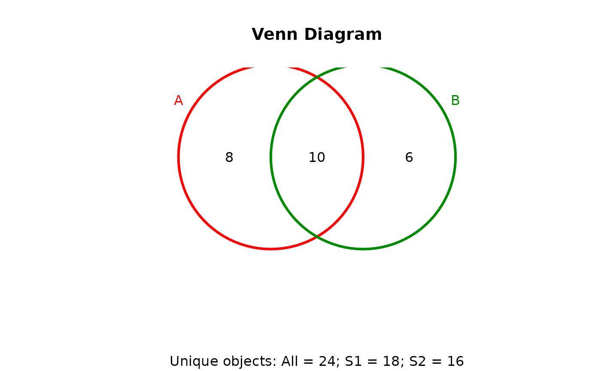
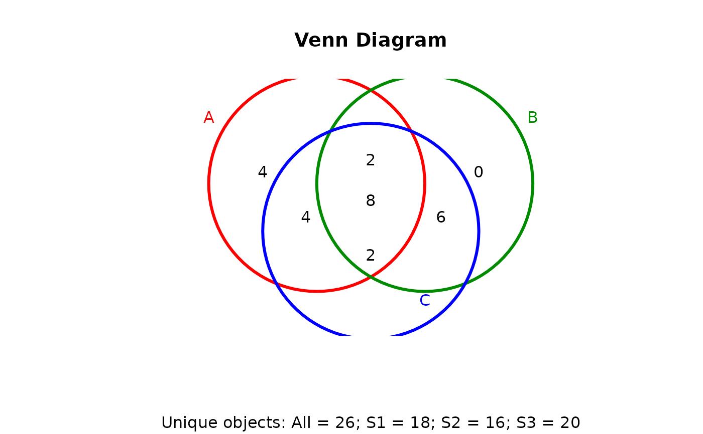
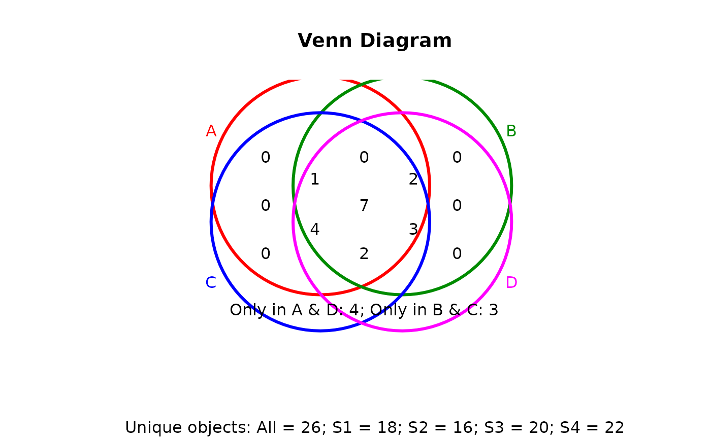
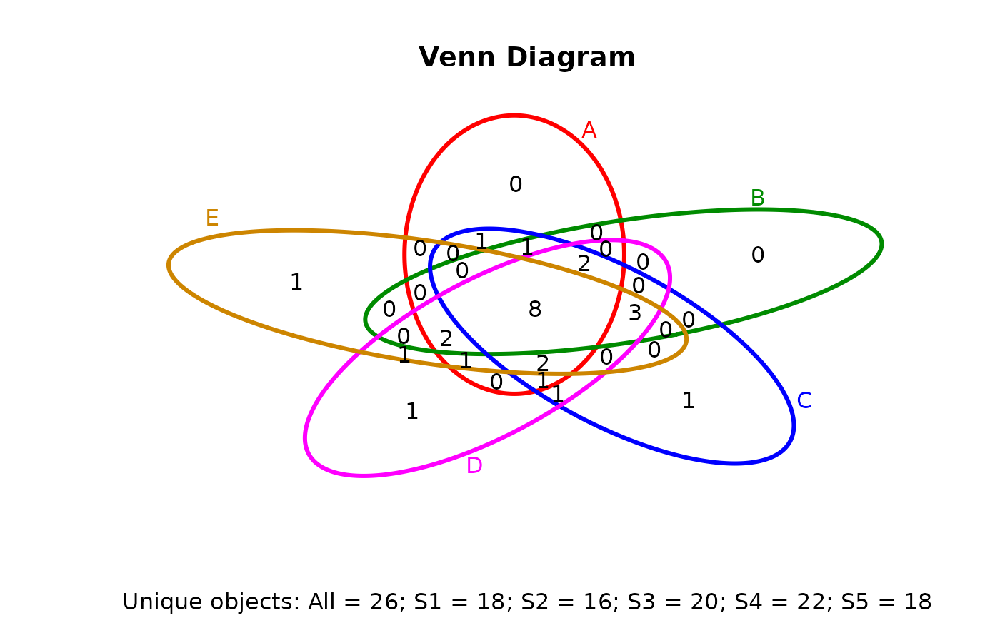
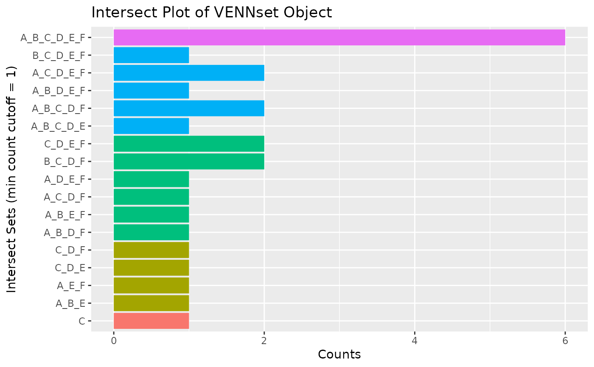
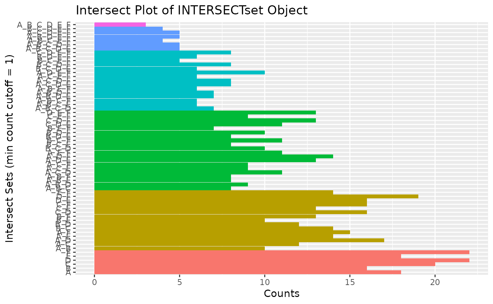
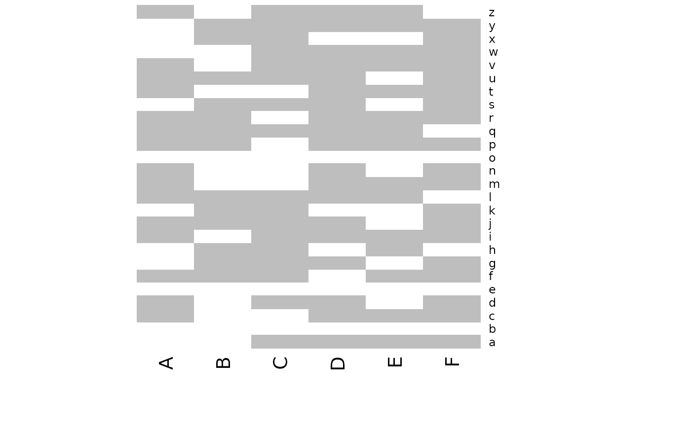

Bar plot for intersect sets
olBarplot.RdGenerates bar plots of the intersect counts of VENNset and
INTERSECTset objects generated by the overLapper function. It is
an alternative to Venn diagrames (e.g. vennPlot) that scales to larger numbers
of label sets. By default the bars in the plot are colored and grouped by complexity
levels of the intersect sets.
olBarplot(x, mincount = 0, complexity="default", myxlabel = "default", myylabel="Counts", mytitle = "default", ...)
Arguments
| x | Object of class |
|---|---|
| mincount | Sets minimum number of counts to consider in the bar plot. Default |
| complexity | Allows user to limit the bar plot to specific complexity levels of intersects
by specifying the chosen ones with an integer vector. Default
|
| myxlabel | Defines label of x-axis. |
| myylabel | Defines label of y-axis. |
| mytitle | Defines main title of plot. |
| ... | Allows to pass on additional arguments to |
Value
Bar plot.
Author
Thomas Girke
Note
The functions provided here are an extension of the Venn diagram resources on this site: http://manuals.bioinformatics.ucr.edu/home/R_BioCondManual#TOC-Venn-Diagrams
See also
overLapper, vennPlot
Examples
## Sample data: list of vectors with object labels setlist <- list(A=sample(letters, 18), B=sample(letters, 16), C=sample(letters, 20), D=sample(letters, 22), E=sample(letters, 18), F=sample(letters, 22)) ## 2-way Venn diagram vennset <- overLapper(setlist[1:2], type="vennsets") vennPlot(vennset)## 4-way Venn diagram vennset <- overLapper(setlist[1:4], type="vennsets") vennPlot(list(vennset, vennset))## Alternative Venn count input to vennPlot (not recommended!) counts <- sapply(vennlist(vennset), length) vennPlot(counts)## 6-way Venn comparison as bar plot vennset <- overLapper(setlist[1:6], type="vennsets") olBarplot(vennset, mincount=1)## Bar plot of standard intersect counts interset <- overLapper(setlist, type="intersects") olBarplot(interset, mincount=1)#> [1] "setlist" "intersectmatrix" "complexitylevels" "vennlist"#> [1] "setlist" "intersectmatrix" "complexitylevels" "intersectlist"#> $A #> [1] "u" "r" "j" "b" "t" "e" "l" "v" "m" "d" "c" "n" "z" "f" "o" "p" "q" "i" #> #> $B #> [1] "u" "f" "g" "x" "y" "e" "l" "h" "k" "p" "r" "b" "j" "q" "s" "o" #> #> $C #> [1] "v" "z" "q" "e" "o" "w" "l" "f" "y" "x" "a" "i" "d" "b" "h" "g" "k" "j" "s" #> [20] "u" #> #> $D #> [1] "j" "i" "v" "n" "c" "l" "z" "t" "b" "s" "g" "p" "d" "u" "m" "o" "q" "r" "a" #> [20] "y" "w" "e" #> #> $E #> [1] "z" "b" "y" "i" "a" "q" "v" "t" "r" "c" "p" "o" "w" "l" "m" "e" "h" "f" #> #> $F #> [1] "a" "t" "j" "c" "r" "g" "n" "x" "s" "o" "b" "e" "f" "v" "u" "y" "w" "d" "m" #> [20] "k" "i" "p" #>#> A B C D E F #> a 0 0 1 1 1 1 #> b 1 1 1 1 1 1 #> c 1 0 0 1 1 1 #> d 1 0 1 1 0 1 #> e 1 1 1 1 1 1 #> f 1 1 1 0 1 1 #> g 0 1 1 1 0 1 #> h 0 1 1 0 1 0 #> i 1 0 1 1 1 1 #> j 1 1 1 1 0 1 #> k 0 1 1 0 0 1 #> l 1 1 1 1 1 0 #> m 1 0 0 1 1 1 #> n 1 0 0 1 0 1 #> o 1 1 1 1 1 1 #> p 1 1 0 1 1 1 #> q 1 1 1 1 1 0 #> r 1 1 0 1 1 1 #> s 0 1 1 1 0 1 #> t 1 0 0 1 1 1 #> u 1 1 1 1 0 1 #> v 1 0 1 1 1 1 #> w 0 0 1 1 1 1 #> x 0 1 1 0 0 1 #> y 0 1 1 1 1 1 #> z 1 0 1 1 1 0#> [1] 1 1 1 1 1 1 2 2 2 2 2 2 2 2 2 2 2 2 2 2 2 3 3 3 3 3 3 3 3 3 3 3 3 3 3 3 3 3 #> [39] 3 3 3 4 4 4 4 4 4 4 4 4 4 4 4 4 4 4 5 5 5 5 5 5 6#> $A #> character(0) #> #> $B #> character(0) #> #> $C #> character(0) #> #> $D #> character(0) #> #> $E #> character(0) #> #> $F #> character(0) #> #> $A_B #> character(0) #> #> $A_C #> character(0) #> #> $A_D #> character(0) #> #> $A_E #> character(0) #> #> $A_F #> character(0) #> #> $B_C #> character(0) #> #> $B_D #> character(0) #> #> $B_E #> character(0) #> #> $B_F #> character(0) #> #> $C_D #> character(0) #> #> $C_E #> character(0) #> #> $C_F #> character(0) #> #> $D_E #> character(0) #> #> $D_F #> character(0) #> #> $E_F #> character(0) #> #> $A_B_C #> character(0) #> #> $A_B_D #> character(0) #> #> $A_B_E #> character(0) #> #> $A_B_F #> character(0) #> #> $A_C_D #> character(0) #> #> $A_C_E #> character(0) #> #> $A_C_F #> character(0) #> #> $A_D_E #> character(0) #> #> $A_D_F #> [1] "n" #> #> $A_E_F #> character(0) #> #> $B_C_D #> character(0) #> #> $B_C_E #> [1] "h" #> #> $B_C_F #> [1] "k" "x" #> #> $B_D_E #> character(0) #> #> $B_D_F #> character(0) #> #> $B_E_F #> character(0) #> #> $C_D_E #> character(0) #> #> $C_D_F #> character(0) #> #> $C_E_F #> character(0) #> #> $D_E_F #> character(0) #> #> $A_B_C_D #> character(0) #> #> $A_B_C_E #> character(0) #> #> $A_B_C_F #> character(0) #> #> $A_B_D_E #> character(0) #> #> $A_B_D_F #> character(0) #> #> $A_B_E_F #> character(0) #> #> $A_C_D_E #> [1] "z" #> #> $A_C_D_F #> [1] "d" #> #> $A_C_E_F #> character(0) #> #> $A_D_E_F #> [1] "c" "m" "t" #> #> $B_C_D_E #> character(0) #> #> $B_C_D_F #> [1] "g" "s" #> #> $B_C_E_F #> character(0) #> #> $B_D_E_F #> character(0) #> #> $C_D_E_F #> [1] "a" "w" #> #> $A_B_C_D_E #> [1] "l" "q" #> #> $A_B_C_D_F #> [1] "j" "u" #> #> $A_B_C_E_F #> [1] "f" #> #> $A_B_D_E_F #> [1] "p" "r" #> #> $A_C_D_E_F #> [1] "i" "v" #> #> $B_C_D_E_F #> [1] "y" #> #> $A_B_C_D_E_F #> [1] "b" "e" "o" #>#> $A #> [1] "b" "c" "d" "e" "f" "i" "j" "l" "m" "n" "o" "p" "q" "r" "t" "u" "v" "z" #> #> $B #> [1] "b" "e" "f" "g" "h" "j" "k" "l" "o" "p" "q" "r" "s" "u" "x" "y" #> #> $C #> [1] "a" "b" "d" "e" "f" "g" "h" "i" "j" "k" "l" "o" "q" "s" "u" "v" "w" "x" "y" #> [20] "z" #> #> $D #> [1] "a" "b" "c" "d" "e" "g" "i" "j" "l" "m" "n" "o" "p" "q" "r" "s" "t" "u" "v" #> [20] "w" "y" "z" #> #> $E #> [1] "a" "b" "c" "e" "f" "h" "i" "l" "m" "o" "p" "q" "r" "t" "v" "w" "y" "z" #> #> $F #> [1] "a" "b" "c" "d" "e" "f" "g" "i" "j" "k" "m" "n" "o" "p" "r" "s" "t" "u" "v" #> [20] "w" "x" "y" #> #> $A_B #> [1] "b" "e" "f" "j" "l" "o" "p" "q" "r" "u" #> #> $A_C #> [1] "b" "d" "e" "f" "i" "j" "l" "o" "q" "u" "v" "z" #> #> $A_D #> [1] "b" "c" "d" "e" "i" "j" "l" "m" "n" "o" "p" "q" "r" "t" "u" "v" "z" #> #> $A_E #> [1] "b" "c" "e" "f" "i" "l" "m" "o" "p" "q" "r" "t" "v" "z" #> #> $A_F #> [1] "b" "c" "d" "e" "f" "i" "j" "m" "n" "o" "p" "r" "t" "u" "v" #> #> $B_C #> [1] "b" "e" "f" "g" "h" "j" "k" "l" "o" "q" "s" "u" "x" "y" #> #> $B_D #> [1] "b" "e" "g" "j" "l" "o" "p" "q" "r" "s" "u" "y" #> #> $B_E #> [1] "b" "e" "f" "h" "l" "o" "p" "q" "r" "y" #> #> $B_F #> [1] "b" "e" "f" "g" "j" "k" "o" "p" "r" "s" "u" "x" "y" #> #> $C_D #> [1] "a" "b" "d" "e" "g" "i" "j" "l" "o" "q" "s" "u" "v" "w" "y" "z" #> #> $C_E #> [1] "a" "b" "e" "f" "h" "i" "l" "o" "q" "v" "w" "y" "z" #> #> $C_F #> [1] "a" "b" "d" "e" "f" "g" "i" "j" "k" "o" "s" "u" "v" "w" "x" "y" #> #> $D_E #> [1] "a" "b" "c" "e" "i" "l" "m" "o" "p" "q" "r" "t" "v" "w" "y" "z" #> #> $D_F #> [1] "a" "b" "c" "d" "e" "g" "i" "j" "m" "n" "o" "p" "r" "s" "t" "u" "v" "w" "y" #> #> $E_F #> [1] "a" "b" "c" "e" "f" "i" "m" "o" "p" "r" "t" "v" "w" "y" #> #> $A_B_C #> [1] "b" "e" "f" "j" "l" "o" "q" "u" #> #> $A_B_D #> [1] "b" "e" "j" "l" "o" "p" "q" "r" "u" #> #> $A_B_E #> [1] "b" "e" "f" "l" "o" "p" "q" "r" #> #> $A_B_F #> [1] "b" "e" "f" "j" "o" "p" "r" "u" #> #> $A_C_D #> [1] "b" "d" "e" "i" "j" "l" "o" "q" "u" "v" "z" #> #> $A_C_E #> [1] "b" "e" "f" "i" "l" "o" "q" "v" "z" #> #> $A_C_F #> [1] "b" "d" "e" "f" "i" "j" "o" "u" "v" #> #> $A_D_E #> [1] "b" "c" "e" "i" "l" "m" "o" "p" "q" "r" "t" "v" "z" #> #> $A_D_F #> [1] "b" "c" "d" "e" "i" "j" "m" "n" "o" "p" "r" "t" "u" "v" #> #> $A_E_F #> [1] "b" "c" "e" "f" "i" "m" "o" "p" "r" "t" "v" #> #> $B_C_D #> [1] "b" "e" "g" "j" "l" "o" "q" "s" "u" "y" #> #> $B_C_E #> [1] "b" "e" "f" "h" "l" "o" "q" "y" #> #> $B_C_F #> [1] "b" "e" "f" "g" "j" "k" "o" "s" "u" "x" "y" #> #> $B_D_E #> [1] "b" "e" "l" "o" "p" "q" "r" "y" #> #> $B_D_F #> [1] "b" "e" "g" "j" "o" "p" "r" "s" "u" "y" #> #> $B_E_F #> [1] "b" "e" "f" "o" "p" "r" "y" #> #> $C_D_E #> [1] "a" "b" "e" "i" "l" "o" "q" "v" "w" "y" "z" #> #> $C_D_F #> [1] "a" "b" "d" "e" "g" "i" "j" "o" "s" "u" "v" "w" "y" #> #> $C_E_F #> [1] "a" "b" "e" "f" "i" "o" "v" "w" "y" #> #> $D_E_F #> [1] "a" "b" "c" "e" "i" "m" "o" "p" "r" "t" "v" "w" "y" #> #> $A_B_C_D #> [1] "b" "e" "j" "l" "o" "q" "u" #> #> $A_B_C_E #> [1] "b" "e" "f" "l" "o" "q" #> #> $A_B_C_F #> [1] "b" "e" "f" "j" "o" "u" #> #> $A_B_D_E #> [1] "b" "e" "l" "o" "p" "q" "r" #> #> $A_B_D_F #> [1] "b" "e" "j" "o" "p" "r" "u" #> #> $A_B_E_F #> [1] "b" "e" "f" "o" "p" "r" #> #> $A_C_D_E #> [1] "b" "e" "i" "l" "o" "q" "v" "z" #> #> $A_C_D_F #> [1] "b" "d" "e" "i" "j" "o" "u" "v" #> #> $A_C_E_F #> [1] "b" "e" "f" "i" "o" "v" #> #> $A_D_E_F #> [1] "b" "c" "e" "i" "m" "o" "p" "r" "t" "v" #> #> $B_C_D_E #> [1] "b" "e" "l" "o" "q" "y" #> #> $B_C_D_F #> [1] "b" "e" "g" "j" "o" "s" "u" "y" #> #> $B_C_E_F #> [1] "b" "e" "f" "o" "y" #> #> $B_D_E_F #> [1] "b" "e" "o" "p" "r" "y" #> #> $C_D_E_F #> [1] "a" "b" "e" "i" "o" "v" "w" "y" #> #> $A_B_C_D_E #> [1] "b" "e" "l" "o" "q" #> #> $A_B_C_D_F #> [1] "b" "e" "j" "o" "u" #> #> $A_B_C_E_F #> [1] "b" "e" "f" "o" #> #> $A_B_D_E_F #> [1] "b" "e" "o" "p" "r" #> #> $A_C_D_E_F #> [1] "b" "e" "i" "o" "v" #> #> $B_C_D_E_F #> [1] "b" "e" "o" "y" #> #> $A_B_C_D_E_F #> [1] "b" "e" "o" #>#> $setlist #> $setlist$A #> [1] "u" "r" "j" "b" "t" "e" "l" "v" "m" "d" "c" "n" "z" "f" "o" "p" "q" "i" #> #> $setlist$B #> [1] "u" "f" "g" "x" "y" "e" "l" "h" "k" "p" "r" "b" "j" "q" "s" "o" #> #> $setlist$C #> [1] "v" "z" "q" "e" "o" "w" "l" "f" "y" "x" "a" "i" "d" "b" "h" "g" "k" "j" "s" #> [20] "u" #> #> $setlist$D #> [1] "j" "i" "v" "n" "c" "l" "z" "t" "b" "s" "g" "p" "d" "u" "m" "o" "q" "r" "a" #> [20] "y" "w" "e" #> #> $setlist$E #> [1] "z" "b" "y" "i" "a" "q" "v" "t" "r" "c" "p" "o" "w" "l" "m" "e" "h" "f" #> #> $setlist$F #> [1] "a" "t" "j" "c" "r" "g" "n" "x" "s" "o" "b" "e" "f" "v" "u" "y" "w" "d" "m" #> [20] "k" "i" "p" #> #> #> $intersectmatrix #> A B C D E F #> a 0 0 1 1 1 1 #> b 1 1 1 1 1 1 #> c 1 0 0 1 1 1 #> d 1 0 1 1 0 1 #> e 1 1 1 1 1 1 #> f 1 1 1 0 1 1 #> g 0 1 1 1 0 1 #> h 0 1 1 0 1 0 #> i 1 0 1 1 1 1 #> j 1 1 1 1 0 1 #> k 0 1 1 0 0 1 #> l 1 1 1 1 1 0 #> m 1 0 0 1 1 1 #> n 1 0 0 1 0 1 #> o 1 1 1 1 1 1 #> p 1 1 0 1 1 1 #> q 1 1 1 1 1 0 #> r 1 1 0 1 1 1 #> s 0 1 1 1 0 1 #> t 1 0 0 1 1 1 #> u 1 1 1 1 0 1 #> v 1 0 1 1 1 1 #> w 0 0 1 1 1 1 #> x 0 1 1 0 0 1 #> y 0 1 1 1 1 1 #> z 1 0 1 1 1 0 #> #> $complexitylevels #> [1] 1 1 1 1 1 1 2 2 2 2 2 2 2 2 2 2 2 2 2 2 2 3 3 3 3 3 3 3 3 3 3 3 3 3 3 3 3 3 #> [39] 3 3 3 4 4 4 4 4 4 4 4 4 4 4 4 4 4 4 5 5 5 5 5 5 6 #> #> $vennlist #> $vennlist$A #> character(0) #> #> $vennlist$B #> character(0) #> #> $vennlist$C #> character(0) #> #> $vennlist$D #> character(0) #> #> $vennlist$E #> character(0) #> #> $vennlist$F #> character(0) #> #> $vennlist$A_B #> character(0) #> #> $vennlist$A_C #> character(0) #> #> $vennlist$A_D #> character(0) #> #> $vennlist$A_E #> character(0) #> #> $vennlist$A_F #> character(0) #> #> $vennlist$B_C #> character(0) #> #> $vennlist$B_D #> character(0) #> #> $vennlist$B_E #> character(0) #> #> $vennlist$B_F #> character(0) #> #> $vennlist$C_D #> character(0) #> #> $vennlist$C_E #> character(0) #> #> $vennlist$C_F #> character(0) #> #> $vennlist$D_E #> character(0) #> #> $vennlist$D_F #> character(0) #> #> $vennlist$E_F #> character(0) #> #> $vennlist$A_B_C #> character(0) #> #> $vennlist$A_B_D #> character(0) #> #> $vennlist$A_B_E #> character(0) #> #> $vennlist$A_B_F #> character(0) #> #> $vennlist$A_C_D #> character(0) #> #> $vennlist$A_C_E #> character(0) #> #> $vennlist$A_C_F #> character(0) #> #> $vennlist$A_D_E #> character(0) #> #> $vennlist$A_D_F #> [1] "n" #> #> $vennlist$A_E_F #> character(0) #> #> $vennlist$B_C_D #> character(0) #> #> $vennlist$B_C_E #> [1] "h" #> #> $vennlist$B_C_F #> [1] "k" "x" #> #> $vennlist$B_D_E #> character(0) #> #> $vennlist$B_D_F #> character(0) #> #> $vennlist$B_E_F #> character(0) #> #> $vennlist$C_D_E #> character(0) #> #> $vennlist$C_D_F #> character(0) #> #> $vennlist$C_E_F #> character(0) #> #> $vennlist$D_E_F #> character(0) #> #> $vennlist$A_B_C_D #> character(0) #> #> $vennlist$A_B_C_E #> character(0) #> #> $vennlist$A_B_C_F #> character(0) #> #> $vennlist$A_B_D_E #> character(0) #> #> $vennlist$A_B_D_F #> character(0) #> #> $vennlist$A_B_E_F #> character(0) #> #> $vennlist$A_C_D_E #> [1] "z" #> #> $vennlist$A_C_D_F #> [1] "d" #> #> $vennlist$A_C_E_F #> character(0) #> #> $vennlist$A_D_E_F #> [1] "c" "m" "t" #> #> $vennlist$B_C_D_E #> character(0) #> #> $vennlist$B_C_D_F #> [1] "g" "s" #> #> $vennlist$B_C_E_F #> character(0) #> #> $vennlist$B_D_E_F #> character(0) #> #> $vennlist$C_D_E_F #> [1] "a" "w" #> #> $vennlist$A_B_C_D_E #> [1] "l" "q" #> #> $vennlist$A_B_C_D_F #> [1] "j" "u" #> #> $vennlist$A_B_C_E_F #> [1] "f" #> #> $vennlist$A_B_D_E_F #> [1] "p" "r" #> #> $vennlist$A_C_D_E_F #> [1] "i" "v" #> #> $vennlist$B_C_D_E_F #> [1] "y" #> #> $vennlist$A_B_C_D_E_F #> [1] "b" "e" "o" #> #>#> $setlist #> $setlist$A #> [1] "u" "r" "j" "b" "t" "e" "l" "v" "m" "d" "c" "n" "z" "f" "o" "p" "q" "i" #> #> $setlist$B #> [1] "u" "f" "g" "x" "y" "e" "l" "h" "k" "p" "r" "b" "j" "q" "s" "o" #> #> $setlist$C #> [1] "v" "z" "q" "e" "o" "w" "l" "f" "y" "x" "a" "i" "d" "b" "h" "g" "k" "j" "s" #> [20] "u" #> #> $setlist$D #> [1] "j" "i" "v" "n" "c" "l" "z" "t" "b" "s" "g" "p" "d" "u" "m" "o" "q" "r" "a" #> [20] "y" "w" "e" #> #> $setlist$E #> [1] "z" "b" "y" "i" "a" "q" "v" "t" "r" "c" "p" "o" "w" "l" "m" "e" "h" "f" #> #> $setlist$F #> [1] "a" "t" "j" "c" "r" "g" "n" "x" "s" "o" "b" "e" "f" "v" "u" "y" "w" "d" "m" #> [20] "k" "i" "p" #> #> #> $intersectmatrix #> A B C D E F #> a 0 0 1 1 1 1 #> b 1 1 1 1 1 1 #> c 1 0 0 1 1 1 #> d 1 0 1 1 0 1 #> e 1 1 1 1 1 1 #> f 1 1 1 0 1 1 #> g 0 1 1 1 0 1 #> h 0 1 1 0 1 0 #> i 1 0 1 1 1 1 #> j 1 1 1 1 0 1 #> k 0 1 1 0 0 1 #> l 1 1 1 1 1 0 #> m 1 0 0 1 1 1 #> n 1 0 0 1 0 1 #> o 1 1 1 1 1 1 #> p 1 1 0 1 1 1 #> q 1 1 1 1 1 0 #> r 1 1 0 1 1 1 #> s 0 1 1 1 0 1 #> t 1 0 0 1 1 1 #> u 1 1 1 1 0 1 #> v 1 0 1 1 1 1 #> w 0 0 1 1 1 1 #> x 0 1 1 0 0 1 #> y 0 1 1 1 1 1 #> z 1 0 1 1 1 0 #> #> $complexitylevels #> [1] 1 1 1 1 1 1 2 2 2 2 2 2 2 2 2 2 2 2 2 2 2 3 3 3 3 3 3 3 3 3 3 3 3 3 3 3 3 3 #> [39] 3 3 3 4 4 4 4 4 4 4 4 4 4 4 4 4 4 4 5 5 5 5 5 5 6 #> #> $intersectlist #> $intersectlist$A #> [1] "b" "c" "d" "e" "f" "i" "j" "l" "m" "n" "o" "p" "q" "r" "t" "u" "v" "z" #> #> $intersectlist$B #> [1] "b" "e" "f" "g" "h" "j" "k" "l" "o" "p" "q" "r" "s" "u" "x" "y" #> #> $intersectlist$C #> [1] "a" "b" "d" "e" "f" "g" "h" "i" "j" "k" "l" "o" "q" "s" "u" "v" "w" "x" "y" #> [20] "z" #> #> $intersectlist$D #> [1] "a" "b" "c" "d" "e" "g" "i" "j" "l" "m" "n" "o" "p" "q" "r" "s" "t" "u" "v" #> [20] "w" "y" "z" #> #> $intersectlist$E #> [1] "a" "b" "c" "e" "f" "h" "i" "l" "m" "o" "p" "q" "r" "t" "v" "w" "y" "z" #> #> $intersectlist$F #> [1] "a" "b" "c" "d" "e" "f" "g" "i" "j" "k" "m" "n" "o" "p" "r" "s" "t" "u" "v" #> [20] "w" "x" "y" #> #> $intersectlist$A_B #> [1] "b" "e" "f" "j" "l" "o" "p" "q" "r" "u" #> #> $intersectlist$A_C #> [1] "b" "d" "e" "f" "i" "j" "l" "o" "q" "u" "v" "z" #> #> $intersectlist$A_D #> [1] "b" "c" "d" "e" "i" "j" "l" "m" "n" "o" "p" "q" "r" "t" "u" "v" "z" #> #> $intersectlist$A_E #> [1] "b" "c" "e" "f" "i" "l" "m" "o" "p" "q" "r" "t" "v" "z" #> #> $intersectlist$A_F #> [1] "b" "c" "d" "e" "f" "i" "j" "m" "n" "o" "p" "r" "t" "u" "v" #> #> $intersectlist$B_C #> [1] "b" "e" "f" "g" "h" "j" "k" "l" "o" "q" "s" "u" "x" "y" #> #> $intersectlist$B_D #> [1] "b" "e" "g" "j" "l" "o" "p" "q" "r" "s" "u" "y" #> #> $intersectlist$B_E #> [1] "b" "e" "f" "h" "l" "o" "p" "q" "r" "y" #> #> $intersectlist$B_F #> [1] "b" "e" "f" "g" "j" "k" "o" "p" "r" "s" "u" "x" "y" #> #> $intersectlist$C_D #> [1] "a" "b" "d" "e" "g" "i" "j" "l" "o" "q" "s" "u" "v" "w" "y" "z" #> #> $intersectlist$C_E #> [1] "a" "b" "e" "f" "h" "i" "l" "o" "q" "v" "w" "y" "z" #> #> $intersectlist$C_F #> [1] "a" "b" "d" "e" "f" "g" "i" "j" "k" "o" "s" "u" "v" "w" "x" "y" #> #> $intersectlist$D_E #> [1] "a" "b" "c" "e" "i" "l" "m" "o" "p" "q" "r" "t" "v" "w" "y" "z" #> #> $intersectlist$D_F #> [1] "a" "b" "c" "d" "e" "g" "i" "j" "m" "n" "o" "p" "r" "s" "t" "u" "v" "w" "y" #> #> $intersectlist$E_F #> [1] "a" "b" "c" "e" "f" "i" "m" "o" "p" "r" "t" "v" "w" "y" #> #> $intersectlist$A_B_C #> [1] "b" "e" "f" "j" "l" "o" "q" "u" #> #> $intersectlist$A_B_D #> [1] "b" "e" "j" "l" "o" "p" "q" "r" "u" #> #> $intersectlist$A_B_E #> [1] "b" "e" "f" "l" "o" "p" "q" "r" #> #> $intersectlist$A_B_F #> [1] "b" "e" "f" "j" "o" "p" "r" "u" #> #> $intersectlist$A_C_D #> [1] "b" "d" "e" "i" "j" "l" "o" "q" "u" "v" "z" #> #> $intersectlist$A_C_E #> [1] "b" "e" "f" "i" "l" "o" "q" "v" "z" #> #> $intersectlist$A_C_F #> [1] "b" "d" "e" "f" "i" "j" "o" "u" "v" #> #> $intersectlist$A_D_E #> [1] "b" "c" "e" "i" "l" "m" "o" "p" "q" "r" "t" "v" "z" #> #> $intersectlist$A_D_F #> [1] "b" "c" "d" "e" "i" "j" "m" "n" "o" "p" "r" "t" "u" "v" #> #> $intersectlist$A_E_F #> [1] "b" "c" "e" "f" "i" "m" "o" "p" "r" "t" "v" #> #> $intersectlist$B_C_D #> [1] "b" "e" "g" "j" "l" "o" "q" "s" "u" "y" #> #> $intersectlist$B_C_E #> [1] "b" "e" "f" "h" "l" "o" "q" "y" #> #> $intersectlist$B_C_F #> [1] "b" "e" "f" "g" "j" "k" "o" "s" "u" "x" "y" #> #> $intersectlist$B_D_E #> [1] "b" "e" "l" "o" "p" "q" "r" "y" #> #> $intersectlist$B_D_F #> [1] "b" "e" "g" "j" "o" "p" "r" "s" "u" "y" #> #> $intersectlist$B_E_F #> [1] "b" "e" "f" "o" "p" "r" "y" #> #> $intersectlist$C_D_E #> [1] "a" "b" "e" "i" "l" "o" "q" "v" "w" "y" "z" #> #> $intersectlist$C_D_F #> [1] "a" "b" "d" "e" "g" "i" "j" "o" "s" "u" "v" "w" "y" #> #> $intersectlist$C_E_F #> [1] "a" "b" "e" "f" "i" "o" "v" "w" "y" #> #> $intersectlist$D_E_F #> [1] "a" "b" "c" "e" "i" "m" "o" "p" "r" "t" "v" "w" "y" #> #> $intersectlist$A_B_C_D #> [1] "b" "e" "j" "l" "o" "q" "u" #> #> $intersectlist$A_B_C_E #> [1] "b" "e" "f" "l" "o" "q" #> #> $intersectlist$A_B_C_F #> [1] "b" "e" "f" "j" "o" "u" #> #> $intersectlist$A_B_D_E #> [1] "b" "e" "l" "o" "p" "q" "r" #> #> $intersectlist$A_B_D_F #> [1] "b" "e" "j" "o" "p" "r" "u" #> #> $intersectlist$A_B_E_F #> [1] "b" "e" "f" "o" "p" "r" #> #> $intersectlist$A_C_D_E #> [1] "b" "e" "i" "l" "o" "q" "v" "z" #> #> $intersectlist$A_C_D_F #> [1] "b" "d" "e" "i" "j" "o" "u" "v" #> #> $intersectlist$A_C_E_F #> [1] "b" "e" "f" "i" "o" "v" #> #> $intersectlist$A_D_E_F #> [1] "b" "c" "e" "i" "m" "o" "p" "r" "t" "v" #> #> $intersectlist$B_C_D_E #> [1] "b" "e" "l" "o" "q" "y" #> #> $intersectlist$B_C_D_F #> [1] "b" "e" "g" "j" "o" "s" "u" "y" #> #> $intersectlist$B_C_E_F #> [1] "b" "e" "f" "o" "y" #> #> $intersectlist$B_D_E_F #> [1] "b" "e" "o" "p" "r" "y" #> #> $intersectlist$C_D_E_F #> [1] "a" "b" "e" "i" "o" "v" "w" "y" #> #> $intersectlist$A_B_C_D_E #> [1] "b" "e" "l" "o" "q" #> #> $intersectlist$A_B_C_D_F #> [1] "b" "e" "j" "o" "u" #> #> $intersectlist$A_B_C_E_F #> [1] "b" "e" "f" "o" #> #> $intersectlist$A_B_D_E_F #> [1] "b" "e" "o" "p" "r" #> #> $intersectlist$A_C_D_E_F #> [1] "b" "e" "i" "o" "v" #> #> $intersectlist$B_C_D_E_F #> [1] "b" "e" "o" "y" #> #> $intersectlist$A_B_C_D_E_F #> [1] "b" "e" "o" #> #>## Pairwise intersect matrix and heatmap olMA <- sapply(names(setlist), function(x) sapply(names(setlist), function(y) sum(setlist[[x]] %in% setlist[[y]]))) olMA#> A B C D E F #> A 18 10 12 17 14 15 #> B 10 16 14 12 10 13 #> C 12 14 20 16 13 16 #> D 17 12 16 22 16 19 #> E 14 10 13 16 18 14 #> F 15 13 16 19 14 22## Presence-absence matrices for large numbers of sample sets interset <- overLapper(setlist=setlist, type="intersects", complexity=2) (paMA <- intersectmatrix(interset))#> A B C D E F #> a 0 0 1 1 1 1 #> b 1 1 1 1 1 1 #> c 1 0 0 1 1 1 #> d 1 0 1 1 0 1 #> e 1 1 1 1 1 1 #> f 1 1 1 0 1 1 #> g 0 1 1 1 0 1 #> h 0 1 1 0 1 0 #> i 1 0 1 1 1 1 #> j 1 1 1 1 0 1 #> k 0 1 1 0 0 1 #> l 1 1 1 1 1 0 #> m 1 0 0 1 1 1 #> n 1 0 0 1 0 1 #> o 1 1 1 1 1 1 #> p 1 1 0 1 1 1 #> q 1 1 1 1 1 0 #> r 1 1 0 1 1 1 #> s 0 1 1 1 0 1 #> t 1 0 0 1 1 1 #> u 1 1 1 1 0 1 #> v 1 0 1 1 1 1 #> w 0 0 1 1 1 1 #> x 0 1 1 0 0 1 #> y 0 1 1 1 1 1 #> z 1 0 1 1 1 0